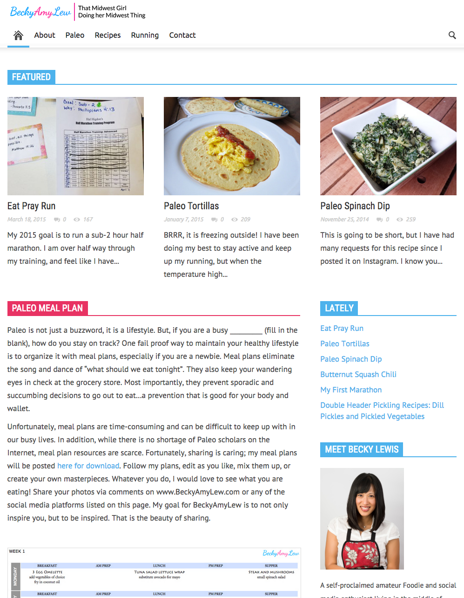
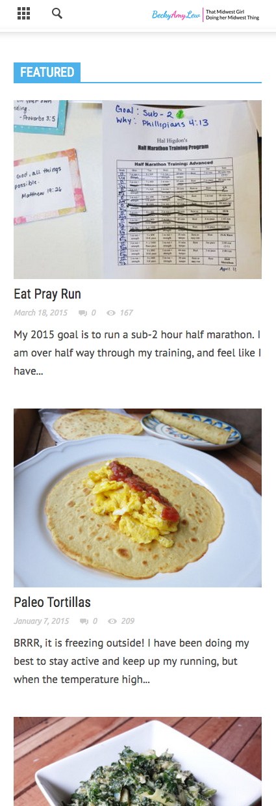

Portfolio .
BeckyAmyLew is my personal blog I created to journal my Paleo Diet and running experiences, with hopes to help others in their own personal goals. I wanted to design a welcoming and non-obtrusive Website that allows users to easily navigate through the site to find what they are looking for, as well as discover additional relevant information along the way.
I used Wordpress for this site, because I knew it was going to be very content-heavy, with lots of pictures and recipes. Having a CMS platform allows me to blog often and quickly. Additionally, it gave me the opportunity to play around with plugins for things like an online meal plan table and recipe posts.
Visit BeckyAmyLew

